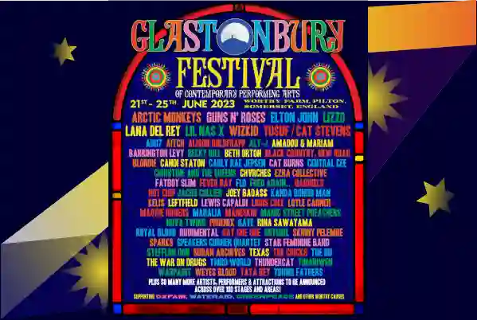

Glastonbury Festival
Glastonbury Festival (formally Glastonbury Festival of Contemporary Performing Arts and known
colloquially as Glastonbury) is a five-day festival of contemporary performing arts held near
Pilton, Somerset, England, in most summers. In addition to contemporary music, the festival hosts
dance, comedy, theatre, circus, cabaret, and other arts. Leading pop and rock artists have
headlined, alongside thousands of others appearing on smaller stages and performance areas. Films
and albums have been recorded at the festival, and it receives extensive television and newspaper
coverage.
Glastonbury is attended by around 200,000 people, requiring extensive security, transport, water,
and electricity-supply infrastructure. While the number of attendees is sometimes swollen by
gatecrashers, a record of 300,000 people was set at the 1994 festival, headlined by the Levellers,
who performed on The Pyramid Stage. Most festival staff are unpaid volunteers, helping the
festival to raise millions of pounds for charity organisations.
Regarded as a major event in British culture, the festival is inspired by the ethos of the hippie,
the counterculture of the 1960s, and the free festival movement. Vestiges of these traditions are
retained in the Green Fields area, which includes sections known as the Green Futures, the Stone
Circle and Healing Field. Michael Eavis hosted the first festival, then called Pilton Festival,
after seeing an open-air Led Zeppelin concert in 1970 at the Bath Festival of Blues and Progressive
Music.
The festival was held intermittently from 1970 until 1981 and has been held most years since, except
for "fallow years" taken mostly at five-year intervals, intended to give the land, local population,
and organisers a break. 2018 was a "fallow year", and the 2019 festival took place from 26 to 30
June. There have been two consecutive "fallow years" since then due to the COVID-19 pandemic.
The festival returned for 22-26 June 2022 with the headliners Billie Eilish, Paul McCartney and
Kendrick Lamar. The next festival took place between 21 and 25 June 2023, headlined by Arctic
Monkeys, Guns N' Roses and Elton John in his final UK performance.
Glastonbury Location
The festival takes place in South West England at Worthy Farm between the small villages of Pilton
and Pylle in Somerset, six miles east of Glastonbury, overlooked by the Glastonbury Tor in the "Vale
of Avalon". The area has a number of legends and spiritual traditions, and is a "New Age" site of
interest: ley lines are considered to converge on the Tor. The nearest town to the festival site is
Shepton Mallet, three miles (5 km) northeast, but there continues to be interaction between the
people espousing alternative lifestyles living in Glastonbury and the festival. The farm is situated
between the A361 and A37 roads.
Worthy Farm is situated at grid reference ST 590 397 in a valley at the head of the Whitelake River,
between two low limestone ridges, part of the southern edge of the Mendip Hills. On the site is a
confluence of the two small streams that make the Whitelake River. In the past, the site has
experienced problems with flooding, though after the floods that occurred during the 1997 and 1998
festival, drainage was improved. This did not prevent flooding during the 2005 festival, but allowed
the flood water to dissipate within hours. The Highbridge branch of the Somerset and Dorset Joint
Railway ran through the farm on an embankment but was dismantled in 1966 and now forms a main
thoroughfare across the site. Another prominent feature is the high-voltage electricity line which
crosses the site east-west. There are several public rights of way bordering the festival site.
In recent years, the site has been organised around a restricted backstage compound, with the
Pyramid stage on the north and Other stage on the south of the compound. Attractions on the east of
the site include the acoustic tent, comedy tent and circus. To the south are the green fields, which
include displays of traditional and environmentally friendly crafts. In King's Meadow, the hill at
the far south of the site, is a modern small megalith circle which, like Stonehenge, is coordinated
with the summer solstice, and since 1990 represents a stone circle.
Stay tuned and never miss a beat with the latest updates from Glastonbury! Subscribe to our YouTube channel for exclusive videos, behind-the-scenes content, and the hottest news. Join our community and follow us on YouTube for an immersive festival experience like no other!
A Magic Day
A photo from last year
Amazing Friends
A photo from last year
Why not! üòÅ
A photo from last year
Dragon ceremony
A photo from last year
☀ How it all started. ☀

Welcome to the History pages, which chart the events at the Festival since it began the day
after Jimi Hendrix died, in 1970. To begin your wander down memory lane, select a year from
the list on the right…
(Image above from 1971, by Peter Ball)
☀ The first manifest 1970 ☀
The first Festival was held on the day after Jimi Hendrix died, over a two day period and before long “word had got around”. It was the Blues festival at the Bath & West Showground that had inspired Michael Eavis to begin a festival of his own although on a smaller scale.Acts to appear included: Marc Bolan, Keith Christmas, Stackridge, Al Stewart, Quintessence Attendance: 1,500.Price: £1 including free milk from the farm.
☀ The last manifest 2023 ☀
2023 saw Glastonbury return, firing on all cylinders. Joining the Green Fields, which have always been powered by renewable energy, this year every generator across the Festival site was run entirely on palm-oil free, sustainable HVO renewable fuel. This, along with the new temporary wind turbine powering the food stalls at Carhenge, added to the Festival's existing green energy arsenal - the solar array on the cowshed roof and the anaerobic digester, turning slurry waste into renewable energy - helping to make Glastonbury a greener and even more sustainable Festival.